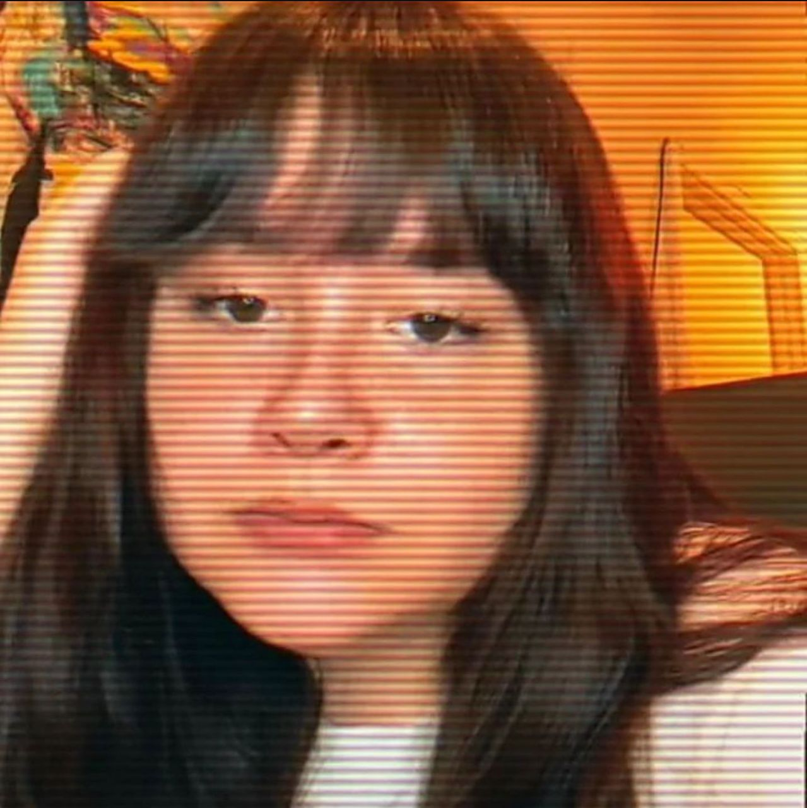

ENLIGHTENMENT
"The most amazing reader I’ve ever experienced. I had the pleasure of seeing him last years and came back again because he was right about everything. He knows the TRUTH of things I never told anyone and I spoke with people who passed away that really brought me closure. He has a warm loving energy that makes you feel at peace. If you have the opportunity to visit or call him, do it! IT WILL BE THE BEST DECISION OF YOUR LIFE! LIFE CHANGING! I paid $85 and gave him more because he spend SOO much tome with me! Hours! He says his reading are an hour, but he spends more time! Last year he spent 3 hours with me and today he spent 2! He calmed my mind and soul. I’m grateful!"
-Ariel Teller
"Ive never met in my life someone as caring and loving as Micheal, as a person and even more as a psychic. From the the first time speaking to me he gave me so much in depth details and ACCURATE. He told me all and everything that was holding me back. And ive been working and counseling with him only. Whoever that is reading this, drop everything you know about psychics until you speak with Micheal.
Take it from me, ive dealt with psychics well over 10 years, conned and scammed many times. PSYCHICS are real, Its just ive finally met someone who does not make the profession looks bad.
You will remember this review when you speak to Micheal, you wont need anyone else... your search ends here...
PERIOD
He continues to guide me on this long journey that I am on... He is such a caring person and have a big heart... The world needs more poeple like him.
He is always there for his clients and lift their spirits when in need..
A psychic, a friend, a guiding light...
May you be blessed abundantly"
-Andy Geerman
"The absolute best! Knowledge, wisdom, and absolute guidance! If you haven't experienced his absolutely beautiful gift it's your loss!"
-David